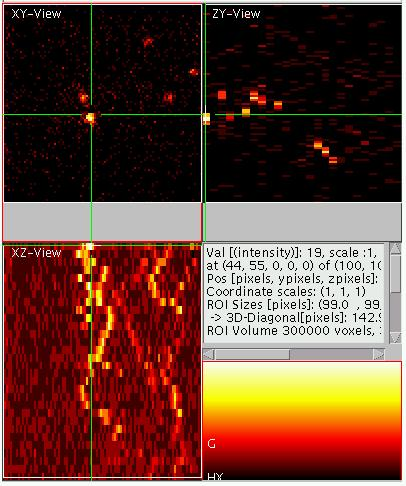
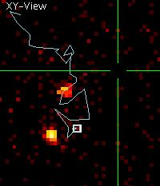
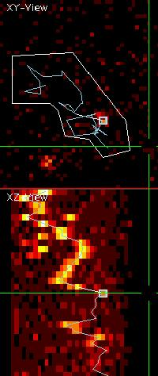
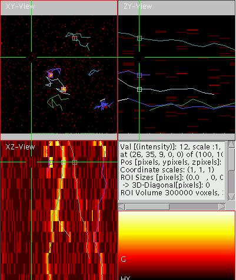

View5D Tracking Tutorial
The image data shows DiI molecules in a lipid GUV membrane
(DLPC/Cholesterol/DiI
= 50/50/1e-4) at room temperature, acquired by
Stefan Schäfer in the
group of Petra Schwille, TU Dresden.
please wait for the viewer and the image data to be loaded (THIS
MIGHT TAKE SOME TIME)! The tutorial continues down below the applet.
Preparing the viewer
Since the particles or cells whose movements shall be tracked by the
viewer often change their brightness (e.g. because they moved out of
focus) it is often advantageous to use a non-linear color map (e.g.
"glow red", as accessible by typing "c" on the keyboard) or switching
on the logarithmic display mode (via "O", remember to press
"shift-o"!). It is also recommended to raise ("1") the lower displayed
threshold to such a level that the particle visibility is increased
(here press 17 times the number one "1").
Using Projections
In the example given above the Z-direction has been misused as a time
direction. For 2D data this way of loading the data into the viewer has
advantages: Using the mode of 3D-projection, the traces of the particle
x-position and y-position appear as blurry curves which offers a
convenient way to check the quality of the trace. To activate the
projection mode, point the mouse into the XZ- (lower right) or the
YZ-view (top right) and type "p", which turns on the maximum
projection. Alternatively you can use "P" for average projection mode.
Both modes are toggled on and off by pressing the "p" or "P" a second
time. You should now setup the above viewer to look approximately like
shown on the right (click on it to enlarge!).
A First Track
Now in the first frame (the top frame) the brightest particle to track
should be selected. Do this by placing clicking next to it and pressing
"m" on the keyboard. This sets a marker. Now initiate the tracking by
pressing "w". You will see a track appearing. This track will be
assigned a random color, which can be changed by pressing "W" until the
user likes it.
When you step through the individual planes by pressing page-up or
page-down, you will notice that the track did not really follow the
particle. E.g. on the second slice it should look like shown on the
left. As you see the tracking has failed, even though it is OK for the
next couple of slices.  The
reason for this failure is that the particle moved between the frames
further the the maximal distance the algorithm is set up to look for
it.
The
reason for this failure is that the particle moved between the frames
further the the maximal distance the algorithm is set up to look for
it.
Correct Setup for Tracking
We can change this setup by pressing "n", which will bring up the menu
shown on the right (click to enlarge). As also shown on the right,
change the parameters labeled X-Neighbors and Y-Neighbors to 5.0. The
meaning is that for future tracking attempts a neighborhood of +/- 5
pixels along X and Y will be searched for a local maximum. After
finding the maximum this procedure will be iteratively repeated until
no different maximum can be found (the markers "slide uphill"). In a
final step the marker position is corrected to sub pixel accuracy by
calculating the center of mass in a region as defined by "X Centre of
Intensity" and the appropriate Y and Z values. Also for the center of
intensity calculation, the region extends from the central pixel into
the + and - direction (thus 2*dx+1 pixels in size along x and so on).
After changing the values, close the menu by clicking "OK" (if not
visible, enlarge the window by dragging at the corner!). Return to the
first slicing position by pressing the "page-up" key and reinitiate the
tracking by again pressing "w".
The track should now
look like
shown on the left. Note that it changed dramatically, since now the
particle was followed correctly though its movement. However, the
indicated slicing position as shown, is the last position at which the
particle is visible. In further slices, it is lost (bleached, or moved
out of focus) and the tracker tracked randomly in the noise until
another particle was found. Note also that the side maximum projection
shows the quality of the track as well as where the particle was lost.
To minimize distortion from other particles in the projection a
user-defined region of interest (ROI) was selected (by first pressing
"S" and then shift-left-mouse-dragging and then clicking on the
individual corners and double-clicking to close the ROI). Note that the
ROI can be deleted by a shift-double-click with the left mouse button.
To now eliminate the remainder of the track, browse to the first
position where the particle is not visible any more and press "Q". This
will delete all the remaining markers, including the active marker.
This track is now finished.
Tracking Multiple Particles
To track a second particle, go back to the first slice, where this
particle is visible (not necessary the first slice of the stack), point
the cursor onto the particle (left click) and press "k". You will see
how another marker, not connected to the other markers appears. Markers
are organized in marker lists. "k" creates a new marker list. "K"
deletes the active marker list. With "j" and "J" the user can browse
through the existing marker lists. For more information on working with
markers and marker lists click here.
Deleting Track
Position
Play with the viewer and try to track all the particles that are
visible. The result should look like shown on the right. You will
notice that the particle on the bottom right was not tracked correctly
at the plane (#9) as shown on the right. If you are not sure where it
is (e.g. due to single molecule blinking) simply delete the marker at
this slice by
pressing "M".
Checking the Track
Another convenient way to browse though tracked lists is pressing the
number keys "0" and "9". In contrast to ordinary browsing via "page-up"
and "page-down", this approach always updates all slicing positions to
match with the marker. Thus it is immediately possible to see whether
the marker is still "on-target". When tracking 3D-datasets over time
this feature is essential and makes work a lot easier!
Helping Out and Tracking "by Hand"
If the tracking failed, you can try to "help" the algorithm by simply
dragging the marker close to where you think the particle was. In the
mentioned case this is possible, but you have to drag it to a position
that the algorithm does not find some other noise pixel. However, it is
also possible to temporarily toggle off the "use automatic maximum
finding" part of the algorithm in the menu accessible via "n" (see also
menu panel above). Once this is turned off, the marker position after a
drag is only influence by the local center of mass, which can also be
turned of if needed. Finish the track until you find them correct.
Tracking in Multi-Color images
If multi-color images are used for tracking, it is recommended to switch into single-color mode ("C")
whilst doing the tracking! The reason is that always the active
element will be used for tracking and in multi-color mode the user is
often not aware that a different than the intended element is "active"
(red border around element color map). This then leads to seemingly
wrong tracking results.
Saving the Result
When the tracks are finished, the result should be saved. This is
achieved by pressing "m" in the lower right part of the window (the
element display). You will see a textual display in the window. From
all the text can be marked (left-drag) with the mouse via the system
dependent copy mechanism (ctrl-c for windows systems) and pasted into a
spread-sheet program like Microsoft Excel or any text editor. However
the program also tries to directly save the results to disc. However,
when running as an applet this is often not possible due to security
restrictions. In some systems the security can be adjusted to allow
saving data from java programs. The name and path under which the
program tries to save can be entered in the setup menu accessible via
("n"). Click here for further
hints on influencing the java security. Under Matlab it is possible to
directly obtain the marker information as a list of Matlab vectors. For
details click here.
Loading Markers
Similarly Lists of marker positions can be loaded and displayed (press
"L" in one of the main displays). This will lead to an update of
the positions of existing markers according to their positions in the
file and new markers will be created if necessary. However, no markers
or lists of markers will be deleted.
In Matlab it is also possible to add markers to an existing viewer
instance (click here). The marker
file names can also be provided via the applet tags for the applet version.
Preprocessing
The program View5D is not constructed for performing major data
processing. However, depending on your application, it may be very
advantageous to do so. You can for example pre-process the data in
ImageJ or Matlab before you start View5D to do the tracking. A simple
filtering operation can yield a different view of the data (see viewer
with tracks on the left, and browse though them).
Tracking direction
Tracking can be performed along any of the directions. The chosen
tracking directions is configured via the menu accessible via "n".